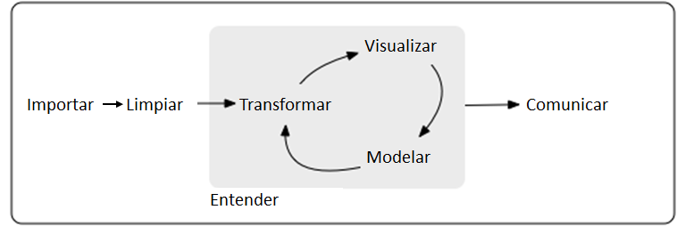
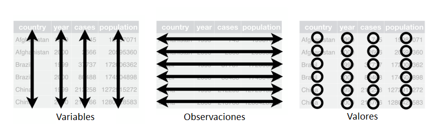
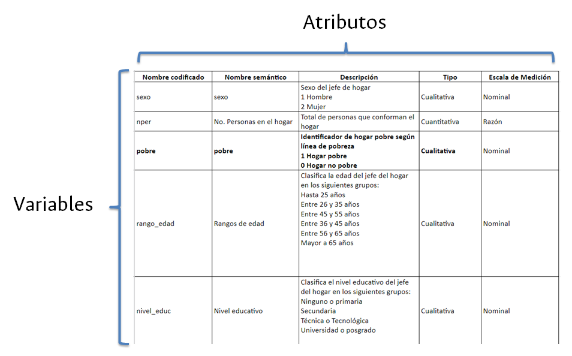
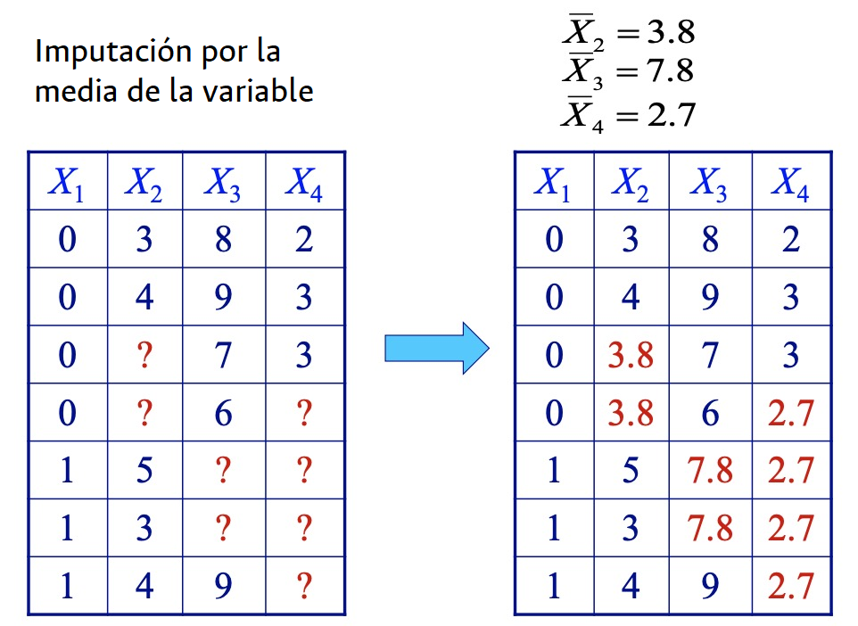
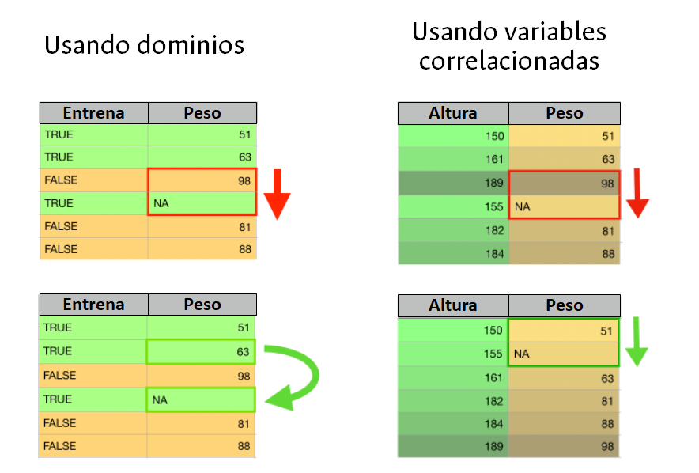
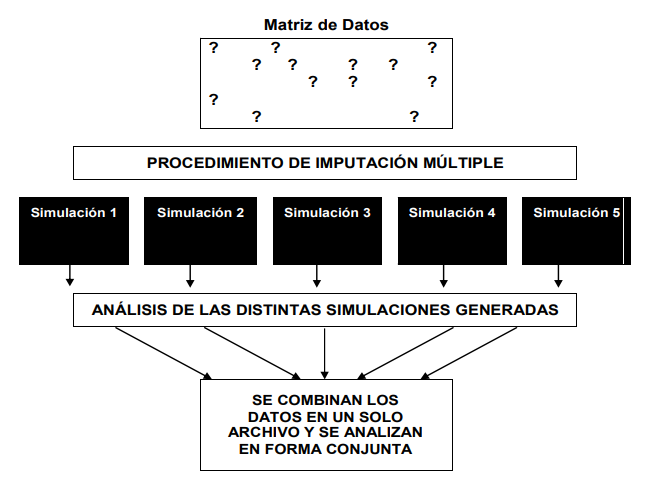
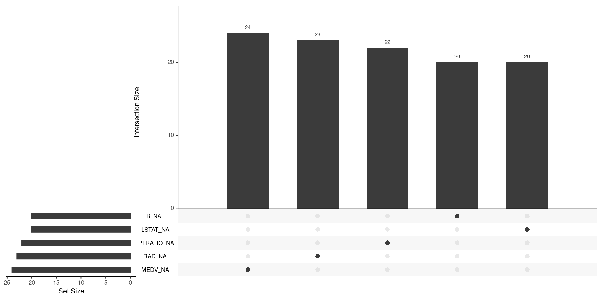
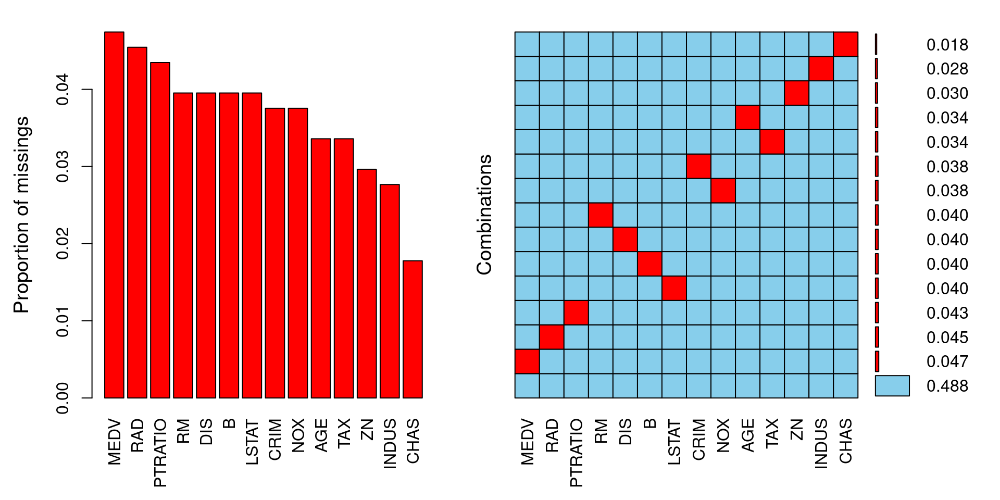
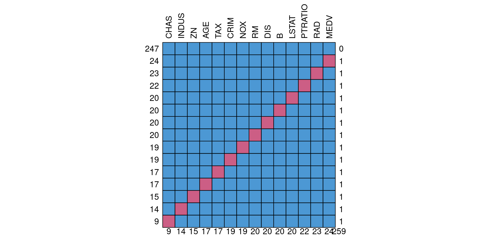
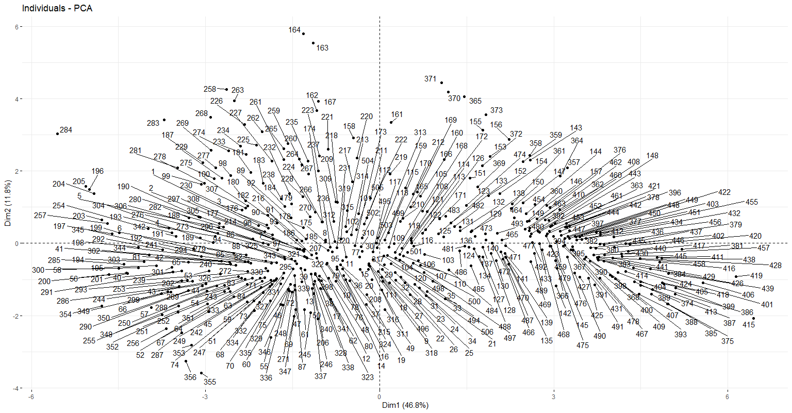

# Cargamos los paquetes
library("tidyverse")
library("readxl")
# Leemos los datos desde un archivo de Excel
read_xlsx(
path = "01_data/programacion/Boston_Housing.xlsx",
sheet="Data"
) -> boston_housing_xlsx
str(boston_housing_xlsx)
# Convierto variables respectivas a factores
# Esto es muy importante para procesos de limpieza de datos
factores <- c("CHAS")
boston_housing_xlsx %>% mutate_at(factores,factor) -> boston_housing_xlsxLimpieza de datos
Flujo de trabajo

Objetivos
Vamos a trabajar con datos tabulares. Existen 3 reglas que logran que un conjunto de datos tabulares esté “limpio”:
- Cada variable debe tener su propia columna
- Cada observación debe tener su propia fila
- Cada valor debe estar en su propia celda

Síntomas de datos desordenados
- Los encabezados de las columnas son valores, no nombres de variables
- En una misma columna se guardan múltiples valores
- Las variables están tanto en columnas como en filas
- Múltiples tipos de unidades observacionales se guardan en la misma tabla
- Una misma unidad observacional está alojada en múltiples tablas
Buena práctica #1: tener información de contexto del problema de estudio
Para todos los conjuntos de datos con los que trabajemos es importante tener un contexto que nos brinde información sobre cómo fueron recolectados, en qué año(s), qué técnicas de muestreo y recolección se usaron para obtener las observaciones y qué personas o entidades fueron los responsables.
- Si los datos los recolectamos nosotros hablamos de información primaria y en nuestros reportes/informes debemos hacer explícito el contexto referido.
- Si los datos los obtuvimos de otra fuenta hablamos de información secundaria y en los reportes derivados igualmente debemos procurar obtener y referenciar el contexto referido para los datos.
Buena práctica #2: construir diccionario de datos
- Consiste en asignar atributos a cada variable de nuestras bases de datos.
- Facilita la lectura y tratamiento de los datos.
- Aporta a la reproducibilidad y repetibilidad de los análisis.
Ejemplo:

Para profundizar: revise el material sobre cómo limpiar tablas.
Práctica
En esta práctica vamos a trabajar con la base de datos Boston Housing, y podemos consultar el contexto de dichos datos haciendo clic en este tunel secreto.
¿Qué aprenderemos?
- Detección y tratamiento de datos faltantes
- Detección y tratamiento de datos atípicos
- Naming
- Detección y tratamiento de datos duplicados
- Discretización de variables
Carguemos los datos:
En cualquier escenario, es posible que tengamos datos faltantes. Veámos cómo abordar esta situación.
Datos faltantes
Los datos faltantes (missing data) son un problema frecuente en todos los tipos de estudios y análisis, sin importar que el diseño sea muy estricto o que los investigadores/analistas traten de prevenirlo.
En ciencia de datos podemos realizar un proceso de imputación de datos, que consiste en asignar un valor a un ítem para el que previamente no se tenia información.
Existen numerosos métodos de imputación de datos, entre otros:
- Usando la media de la variable
- Los datos faltantes de cada columna son reemplazados con la media de los datos disponibles de dicha. Útil para variables numéricas con distribuciones aproximadamente normales.

- HotDeck
- Los datos faltantes son reemplazados por valores tomados de registros similares. Útil en conjuntos de datos grandes.

- ColdDeck
- Los datos faltantes son reemplazados por valores tomados de registros similares de una fuente externa de datos.
- Algoritmos Random Forest
- Los datos faltantes son reemplazados a partir de ensamblar árboles de decisión. Útil en conjuntos de datos grandes.
- Imputación múltiple - MICE
- Los datos faltantes son reemplazados mediante estimaciones obtenidas por una mezcla de métodos de simulación y ponderación de varianzas o errores estándar. Útil para automatizar procesos de limpieza de datos.

Vamos a retirar algunos datos de la base de forma aleatoria.
# Instalamos el paquete mice
# install.packages("mice")
# Cargamos mice
library("mice")
# Hacemos una copia de la base de datos en otro objeto llamado datos_completos
datos_completos <- boston_housing_xlsx
# "amputamos" datos usando el método MCAR: missing completely at random
ampute(datos_completos, prop = 0.5, mech = "MCAR", run = TRUE)$amp -> datos_incompletos
# Mapeamos el número de NAs por cada columna
datos_incompletos %>% map_df(is.na) %>% colSums()Ahora que tenemos datos perdidos en la base de datos, algo que sucede con (mucha) frecuencia, debemos examinar el “comportamiento” de la pérdida de datos, esto es, identificar si existen patrones o situaciones que nos den indicio de por qué se perdieron los datos.
Podemos tener tres patrones de pérdida de datos:
- MCAR (Missing completely at random) - Los datos se pierden de forma aleatoria.
- MAR (Missing at random) - Los datos se pierden de forma aleatoria pero es factible pensar en una variable observada que lo explique.
- NMAR (Not missing at random) - Los datos no se pierden de forma aleatoria
Es deseable que si tenemos datos perdidos esto se deba al azar, y en ese caso, podríamos proceder a imputar los datos faltantes en las covariables (no es tan deseable en la variable objetivo/feature). Si tenemos patrones irregulares de pérdida de datos, sería un indicio de que podemos tener problemas en la captura, sistematización, almacenamiento o distribución de los datos.
Podemos hacer distintas visualizaciones para entender el comportamiento de los datos perdidos.
# Instalamos los paquetes naniar y VIM
# install.packages("naniar")
# install.packages("VIM")
# Cargamos los paquetes
library("naniar")
library("VIM")
# Visualización de patrones con naniar
# Graficamos en orden descendente las variables con más datos perdidos
# Nos muestra también si hay relaciones de pérdida de datos entre distintas variables
gg_miss_upset(datos_incompletos)
# Visualización de patrones con VIM
# Graficamos la proporción de datos incompletos por variable
# Nos muestra también si hay relaciones de pérdida de datos entre distintas variables
aggr(datos_incompletos,numbers=T,sortVar=T)
# Visualización de patrones con mice
# Se enfoca en mostrar si hay relaciones de pérdida de datos entre distintas variables
md.pattern(datos_incompletos, plot = TRUE, rotate.names = TRUE)
Advertencia: este tipo de análisis tienen sentido si por la naturaleza del problema esperamos tener todos los datos completos. Si hay columnas en donde es esperable tener datos faltantes (por ejemplo, por respuestas opcionales o variables que parten una muestra) deberíamos realizar la gráfica anterior solamente con las columnas (variables) de las que esperamos datos completos.
Habiendo comprobado que en nuestros datos los valores perdidos se deben al azar y no superan umbrales de trabajo en ciencia de datos, podemos ahora así aplicar métodos de imputación de datos.
Imputación usando la media
# Filtramos únicamente variables numéricas
datos_incompletos_num <- Filter(is.numeric, datos_incompletos)
# Llamamos el comando mice para imputar los datos
# Asignamos unos parámetros de imputación
mice(datos_incompletos_num,
m = 1, # Número de imputaciones múltiples
maxit = 1, # Número de iteraciones
method = "mean", # Método de imputación
printFlag = FALSE) %>%
mice::complete() -> base_datos_imputados_promedios_mice
# Verificamos que efectivamente ya no hayan datos faltantes
base_datos_imputados_promedios_mice %>% map_df(is.na) %>% colSums()Imputación mediante Hotdeck
# Llamamos el comando hotdeck
hotdeck(datos_incompletos) -> datos_imputados_hd
# Verificamos que efectivamente ya no hayan datos faltantes
datos_imputados_hd[,c(1:ncol(datos_incompletos))] %>% map_df(is.na) %>% colSums()Imputación medidante imputación múltiple
# Llamamos el comando mice para imputar los datos
mice(datos_incompletos, printFlag = FALSE) %>%
mice::complete() -> datos_imputados_mice
# Verificamos que efectivamente ya no hayan datos faltantes
datos_imputados_mice %>% map_df(is.na) %>% colSums()Datos atípicos
En nuestros análisis debemos examinar la presencia de datos atípicos, en la medida que pueden afectar los resultados de las estimaciones, modelos y pruebas de hipótesis.
Para detectar datos atípicos podemos seguir dos caminos:
- Buscar datos atípicos para cada variable (columna). Para esto podríamos usar criterios numéricos o gráficos.
- Buscar filas que consistentemente tengan datos atípicos en todas las celdas.
Veamos dos ejemplos usando la base de datos de Boston Housing.
Primero, una detección de atípicos en una variable en específico (MEDV que es una variable objetivo).
# Estadístico de resumen para una variable
summary(boston_housing_xlsx$MEDV)
# Boxplot de una variable
boxplot(boston_housing_xlsx$MEDV)
# Valores de potenciales outliers
boxplot.stats(boston_housing_xlsx$MEDV)$out
# Filas donde se ubican las observaciones atípicas
outliers <- boxplot(boston_housing_xlsx$MEDV)$outoutliers_filas <- which(boston_housing_xlsx$MEDV %in% c(outliers))
outliers_filasSegundo, una detección de atípicos basado en un análisis multivariado por medio de componentes principales (hay otras técnicas más, por ejemplo, la distancia de Cook).
# Instalamos paquetes
# install.packages("FactoMineR")
# install.packages("factoextra")
# install.packages("ggpubr")
# install.packages("magrittr")
# Cargamos paquetes
library("FactoMineR")
library("factoextra")
library("ggpubr")
library("magrittr")
# Estandarizamos las variables
datos_numericos <- Filter(is.numeric, datos_completos)
datos_numericos %>%
mutate_all(scale) -> data_estandarizada
# Ajusto componentes principales usando el método PCA()
acp = PCA(data_estandarizada, graph=F)# Gráfico de individuos del ACP
# Esto puede tardar un poco
fviz_pca_ind(acp, repel = TRUE)
Con el siguiente código calculamos la distancia al vecino más cercano.
data_estandarizada %>%
dist %>% as.matrix() %>% add(diag(Inf, ncol(.))) %>%
apply(1, min) %>% enframe() %>% arrange(desc(value))Por medio de diversos procedimientos estadísticos podemos detectar datos atípicos. ¿Qué hacer con ellos? Depende. Hay que sopesar el contexto de los datos, la naturaleza del problema y de cada variable, así como combinar elementos de juicio estadístico como elementos de juicio profesionales de otras áreas.
Nombrado adecuado de las variables
Recuerde que en programación los nombres importan (naming). Siguiendo ese marco de referencia, asegúrese de que las variables (columnas):
- No tengan acentos
- No tengan caracteres especiales (@, #, ?, &, *, $, entre otros)
- No tengan espacios (reemplácelos por un guion medio o bajo)
- De ser necesario, que sea identificable una relación de orden
# Número de variables en la base de datos
length(datos_completos)
# Obtiene el nombre de las variables de una base de datos
names(datos_completos)
# Podríamos declarar un vector con los nuevos nombres que necesitemos
# nombres_adecuados <- c(
# "nombre_variable_1",
# "nombre_variable_2",
# ...,
# )
# Y luego asignarlos a nuestra base de datos
# nombres_adecuados -> names(datos_completos)
# Otro ejemplo
# Si tuviésemos variables con espacios, podríamos reemplazar todos los espacios así
# names(datos_completos) <- str_replace_all(names(datos_completos), c(" " = "_"))Valores duplicados
Podemos buscar y eliminar duplicados basados en un columna, por ejemplo, cuando esperamos tener datos únicos de un individuo y tenemos una columna para identificarlo.
## Ejemplo: acá dejamos valores únicos en la columna MEDV
distinct(datos_completos, MEDV, .keep_all = TRUE) -> datos_completos_MEDV_unico
## Ejemplo: acá dejamos valores únicos en la columna DIS
distinct(datos_completos, DIS, .keep_all = TRUE) -> datos_completos_DIS_unicoTambién podemos buscar y eliminar duplicados basados en toda la fila.
distinct(datos_completos) -> datos_completos_sin_filas_duplicadasDiscretización de variables
En algunos problemas, conviene convertir variables que son continuas en variables agrupadas por intervalos. Este proceso se llama discretización. Veamos un ejemplo creando un rango de edad para las viviendas de la base de datos.
# Instalamos paquete lubridate
# install.packages("lubridate")
# Cargamos paquete lubridate
library("lubridate")
# Discretizamos la edad (AGE) de los datos del censo
# mutate() anexa/crea variables a la base de datos
datos_completos %>% mutate(
edad_hoy = datos_completos$AGE+50,
rango_edad = cut(edad_hoy, c(0, 50, 75, 90, 105, 120, 135, Inf))
) -> datos_completos_fechas
head(datos_completos_fechas[(ncol(datos_completos_fechas)-1):ncol(datos_completos_fechas)])Este mismo principio podría servir para crear rangos etarios en poblaciones, niveles de ingresos, niveles de pobreza, etc.